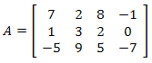
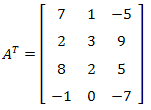

⠀
Jesteś tutaj:
Studia
→
Macierze
→
Transponowanie macierzy
◀ Sprowadzanie macierzy do postaci schodkowej zredukowanej
Mnożenie macierzy ▶
Transponowanie macierzy
Definicja
Macierz transponowana do macierzy \(A\) to macierz \(A^T\), która powstaje przez zamianę jej wierszy na kolumny i kolumn na wiersze.
Macierzą transponowaną do macierzy:  jest macierz: 
◀ Sprowadzanie macierzy do postaci schodkowej zredukowanej
Mnożenie macierzy ▶